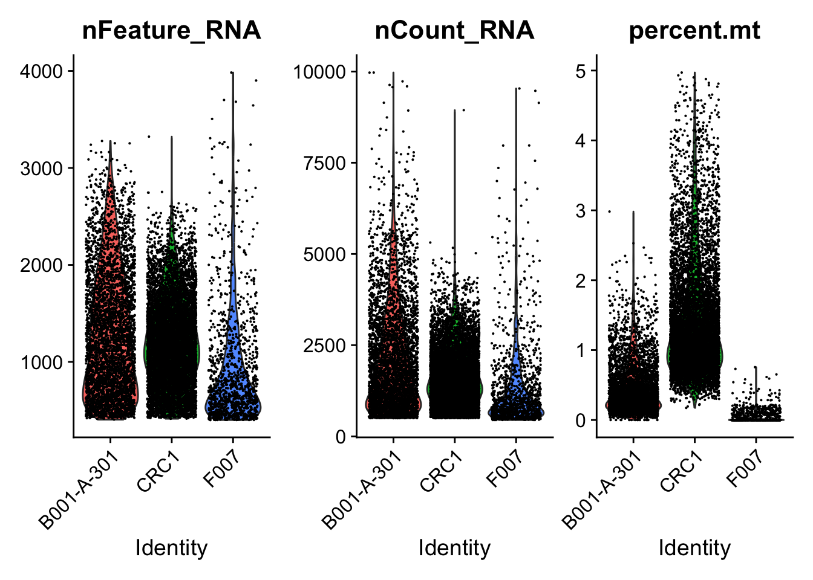
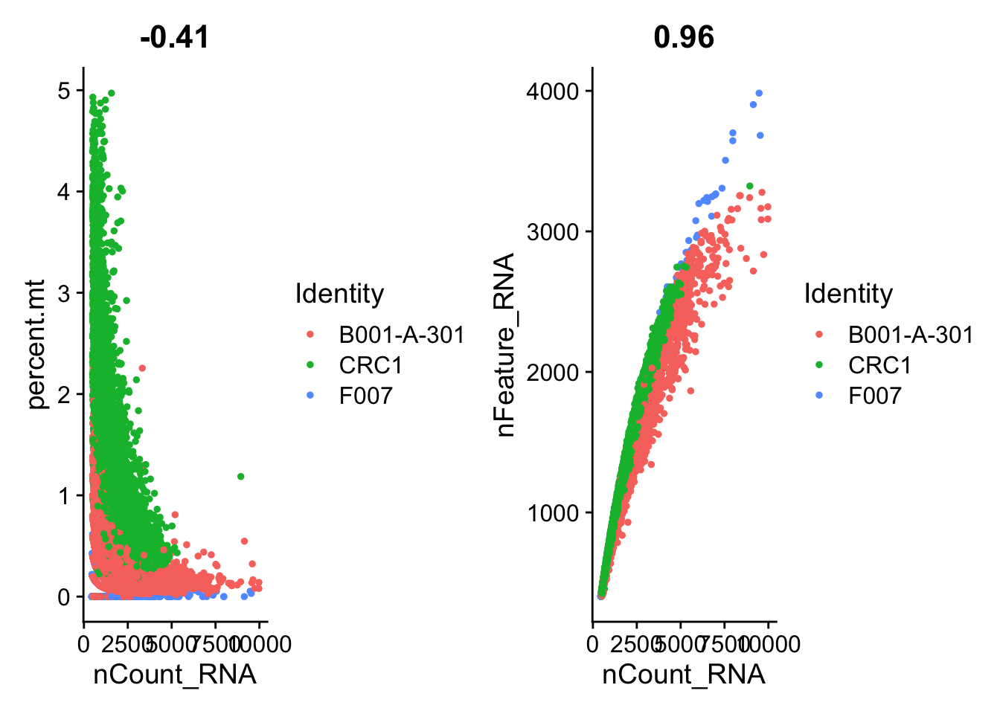
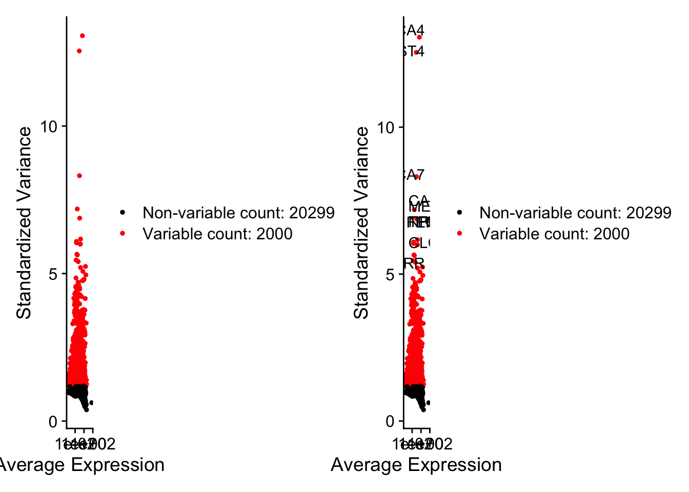
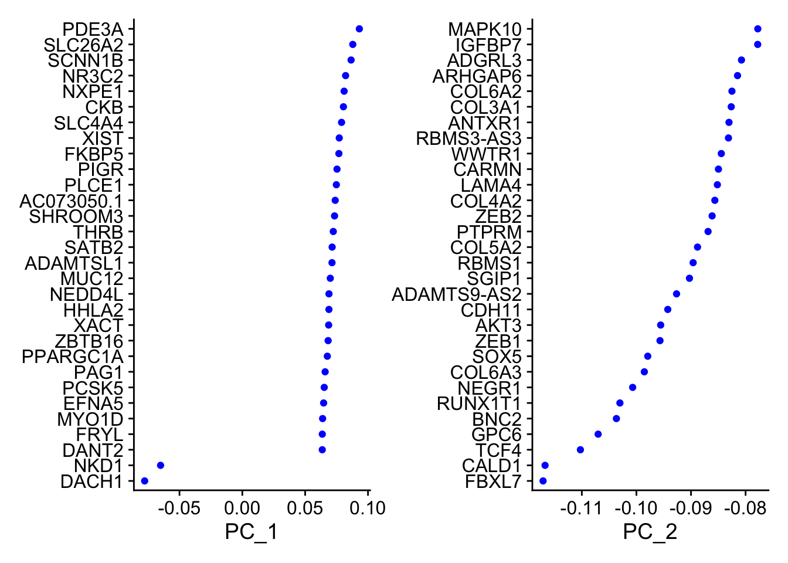
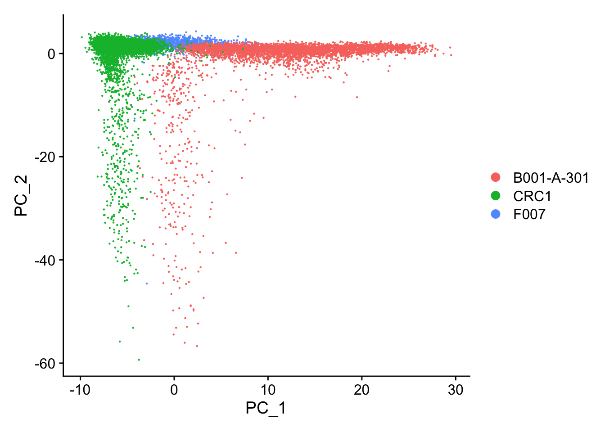
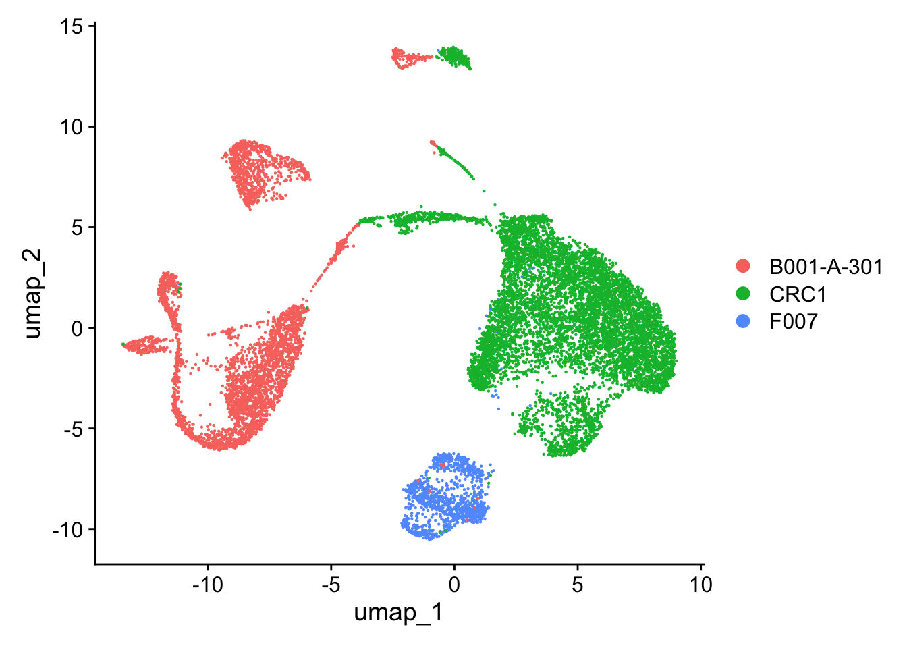
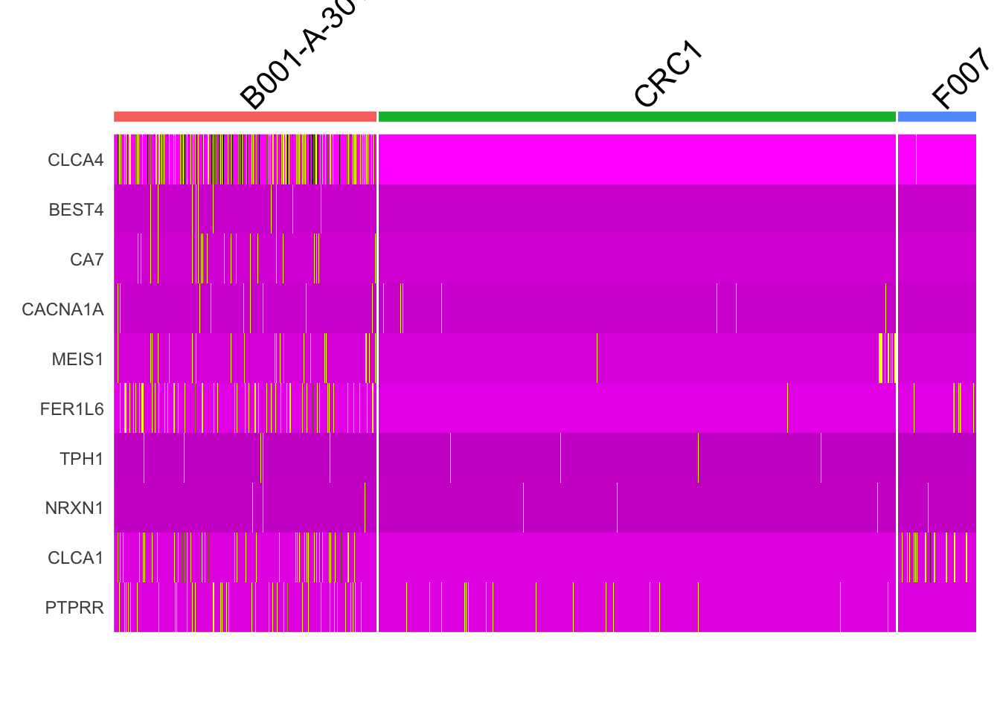

Code
# Load necessary libraries
library(Seurat)
library(dplyr)
library(ggplot2)
# Load data
gene_data <- readRDS("CrC_counts.Rds")
metadata <- readRDS("CrC_metadata.Rds")
# Check orig.ident in metadata
unique(metadata$orig.ident)[1] "F007" "B001-A-301" "B001-A-401" "B001-A-406" "B001-A-501"
[6] "F034" "F072B" "F091" "CRC1_8810" Code
# Subset the metadata to include specific samples based on 'orig.ident'
CrC_metadata_subset <- subset(metadata, orig.ident %in% c("B001-A-301", "F007", "CRC1_8810"))
# Subset the counts data based on the cells in the filtered metadata
CrC_counts_subset <- gene_data[, rownames(CrC_metadata_subset)]
# Create the Seurat object with the subset data
crc_seurat <- CreateSeuratObject(counts = CrC_counts_subset,
meta.data = CrC_metadata_subset,
project = "CRC_analysis",
min.cells = 3,
min.features = 200)
# Add mitochondrial percentage to the Seurat object
crc_seurat[["percent.mt"]] <- PercentageFeatureSet(crc_seurat, pattern = "^MT-")
# Plot violin plots for nFeature_RNA, nCount_RNA, and percent.mt
VlnPlot(crc_seurat, features = c("nFeature_RNA", "nCount_RNA", "percent.mt"), ncol = 3)
Code
# Filter cells with more than 200 genes and less than 5% mitochondrial content
crc_seurat <- subset(crc_seurat, subset = nFeature_RNA > 200 & percent.mt < 5)
# Normalize the gene expression data
crc_seurat <- NormalizeData(crc_seurat)
# Create feature scatter plots
plot1 <- FeatureScatter(crc_seurat, feature1 = "nCount_RNA", feature2 = "percent.mt")
plot2 <- FeatureScatter(crc_seurat, feature1 = "nCount_RNA", feature2 = "nFeature_RNA")
plot1 + plot2
Code
# Identify 2000 most variable features
crc_seurat <- FindVariableFeatures(crc_seurat, selection.method = "vst", nfeatures = 2000)
# Identify the 10 most highly variable genes
top10 <- head(VariableFeatures(crc_seurat), 10)
# Plot variable features with and without labels
plot_a <- VariableFeaturePlot(crc_seurat)
plot_b <- LabelPoints(plot = plot_a, points = top10, repel = TRUE)
plot_a + plot_b
Code
# Scale data
all.genes <- rownames(crc_seurat)
crc_seurat <- ScaleData(crc_seurat, features = all.genes)
# Run PCA
crc_seurat <- RunPCA(crc_seurat, features = VariableFeatures(crc_seurat))
# Visualize PCA loadings and plot the PCA results
VizDimLoadings(crc_seurat, dims = 1:2, reduction = "pca")
Code
DimPlot(crc_seurat, reduction = "pca")
Code
# Run UMAP and plot the results
crc_seurat <- RunUMAP(crc_seurat, dims = 1:10)
DimPlot(crc_seurat, reduction = "umap")
Code
# Heatmap of the top 10 variable genes
DoHeatmap(crc_seurat, features = top10) + NoLegend()